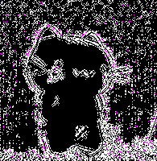
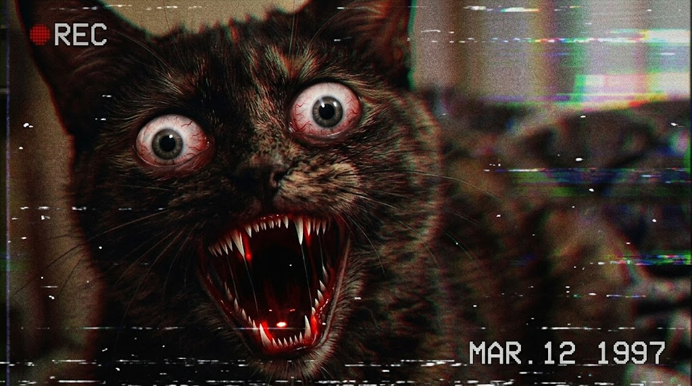
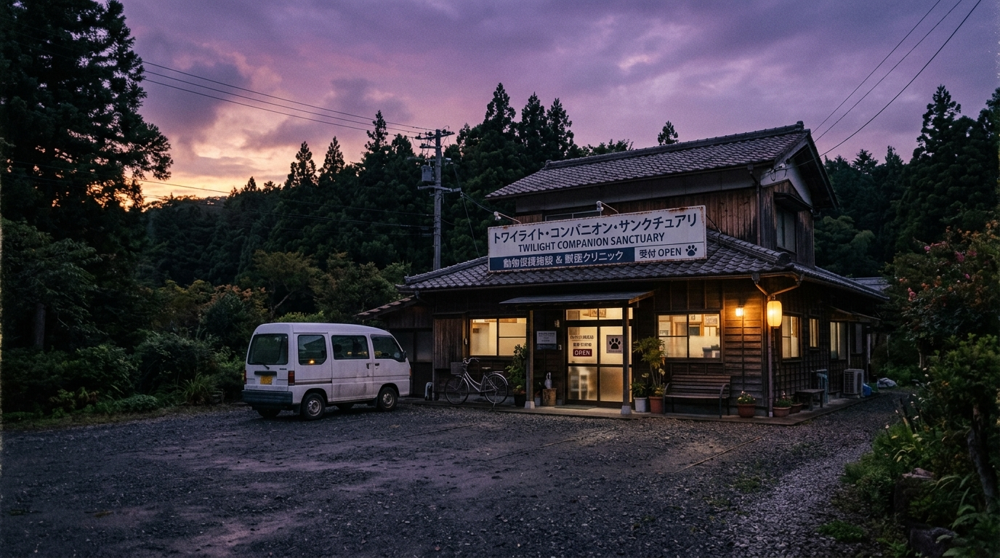

以下は当施設で保護・観察されている特異個体です。【詳細カルテを閲覧】をクリックすると、神藤院長直筆の生理記録と異変報告書を照会できます。
全天候型6系統閉回路監視システム。微光暗視および赤外線熱画像に対応。画面内の異常な影や浮遊物体をクリックして記録してください。
収容個体と里親の精神的安定性を担保するため、直感に従い選択してください。診断結果は譲渡契約の可否に直接影響します。
1999年10月31日 午前03:33に録音されたカセットテープ音声。バンドパスフィルターのつまみを調整し、隠された暗号周波数を特定してください。
すでに「昇華」を遂げ肥猫の肉体へと還った伴侶たちへ、夕暮れの光を手向けます。灯火を灯し、彼岸の静謐な声をお聴きください。
当施設では1998年以来、計1,999回の非公開安魂儀式を執り行ってまいりました。以下は初期に形態再構築を完了した先駆者たちの碑銘です：
【添付：保護時現況写真】
院内カルテ、監視カメラ番号、職員名簿を検索中...
朝焼けの光の中に肥猫の巨影は消滅した。すべての魂は解放され、あなたは果てしない黄昏の悪夢から生還した！